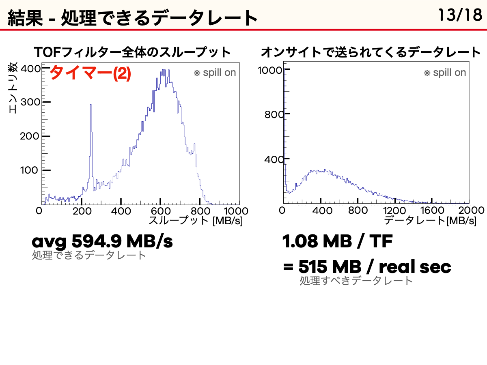
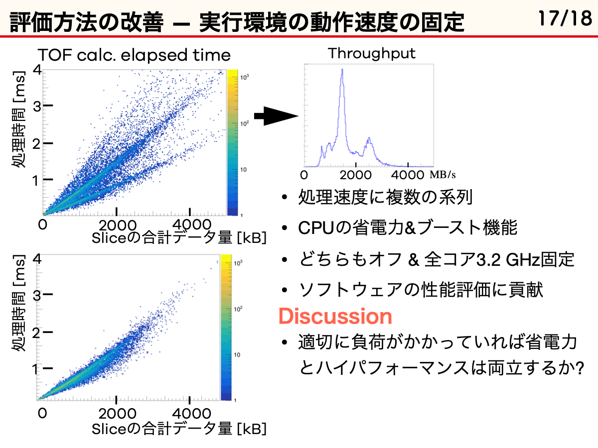
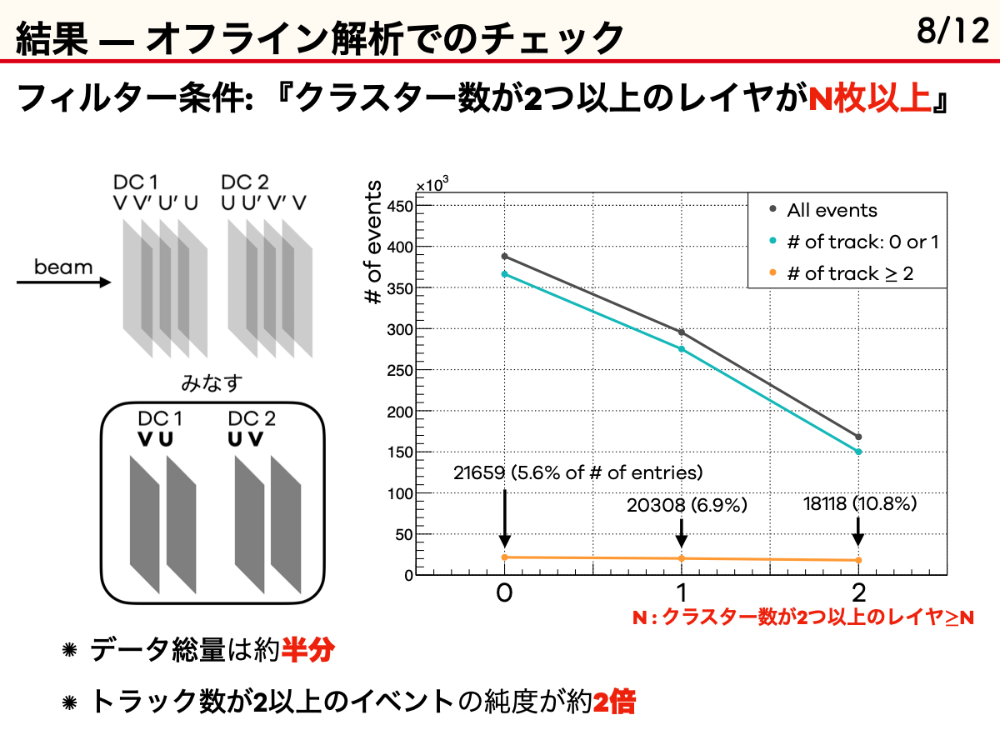
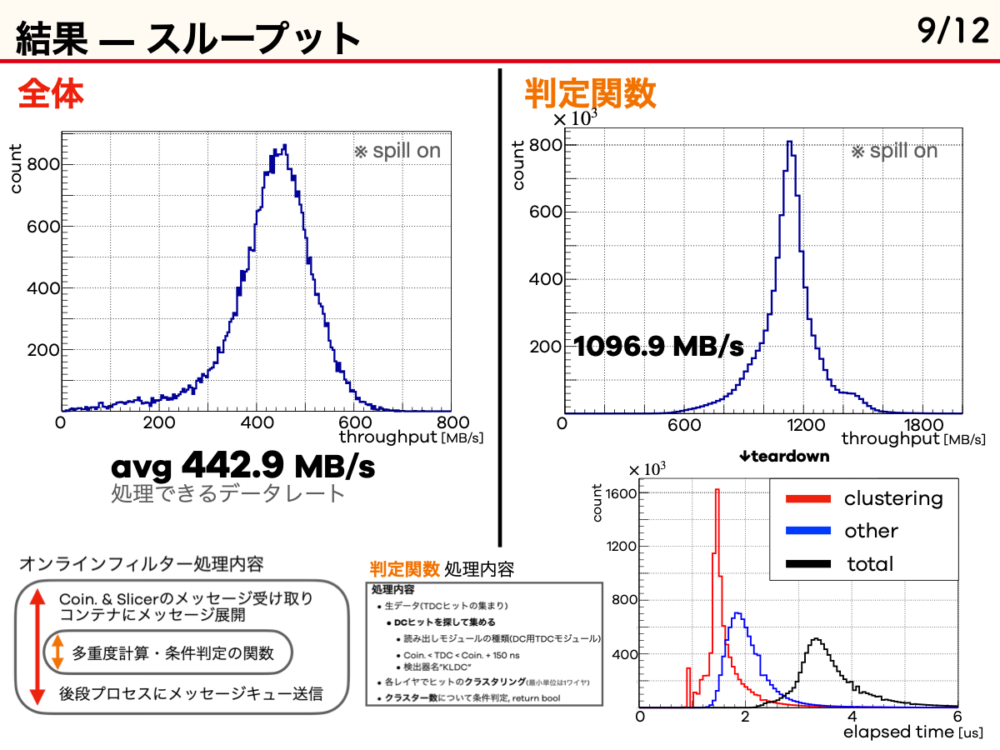
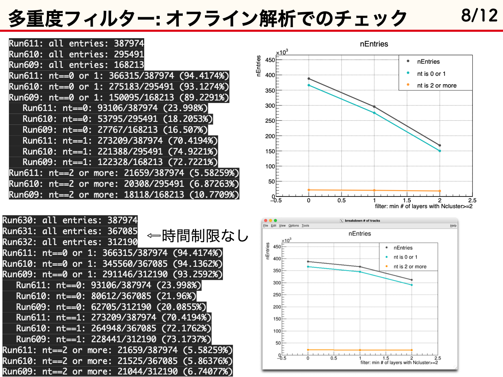
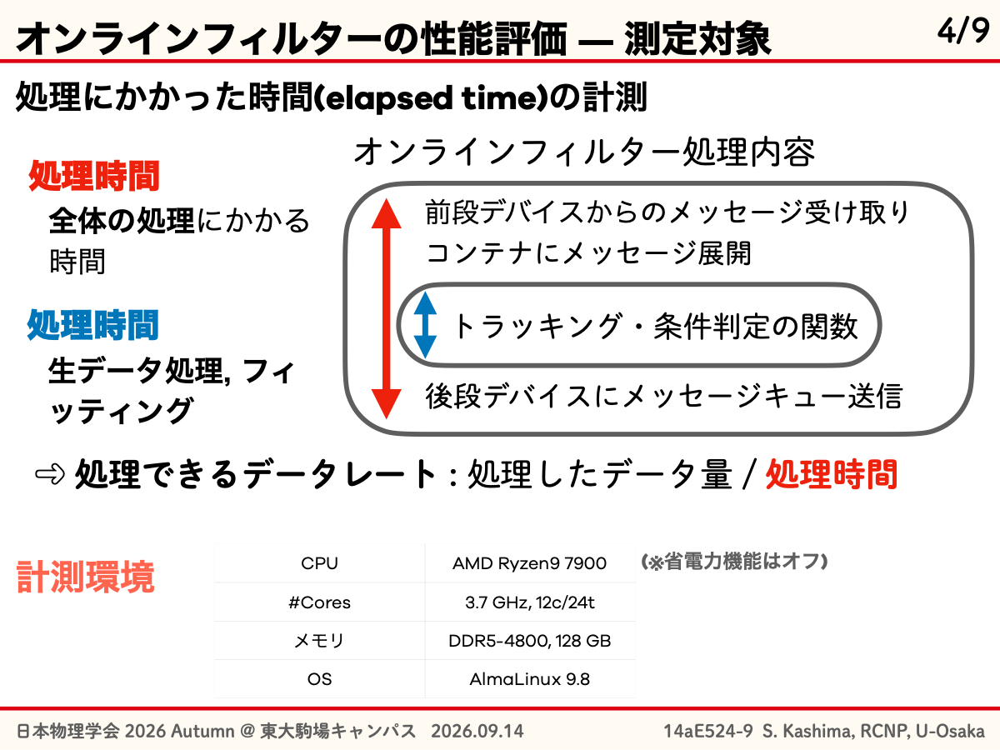
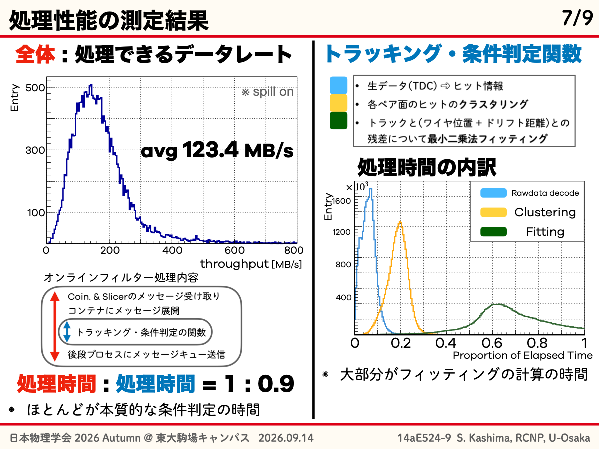
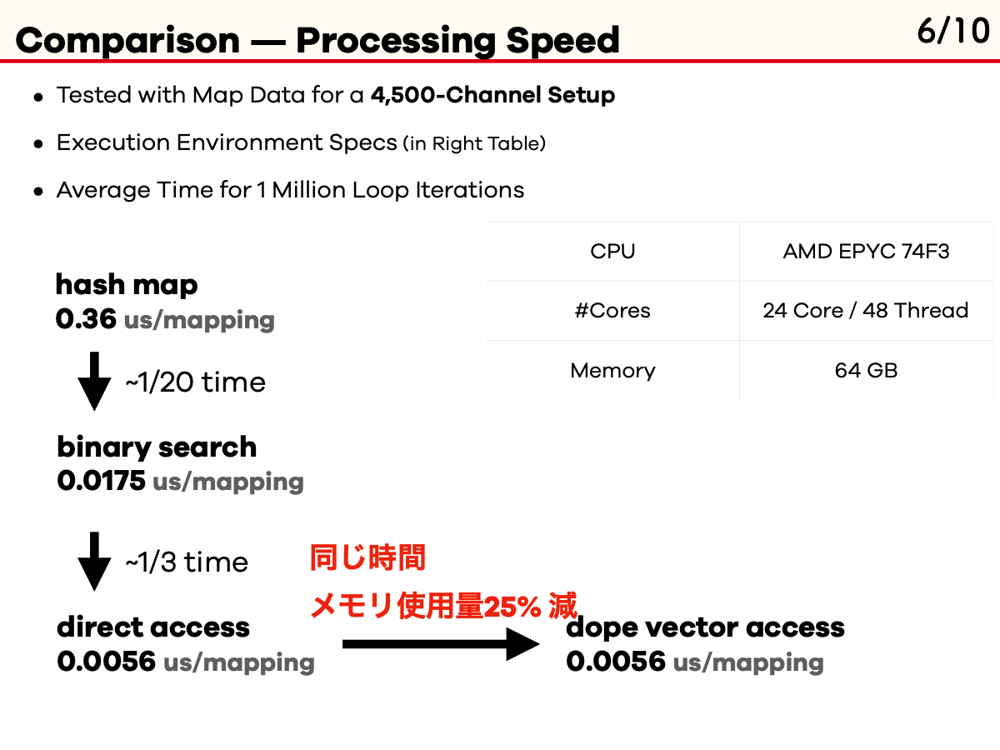
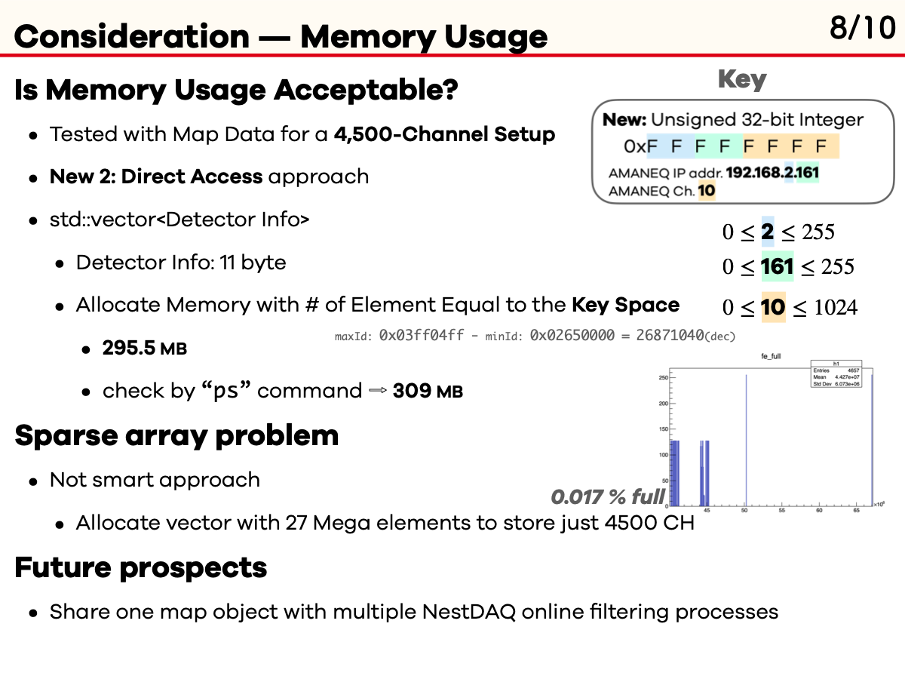

開始日：2026-11-12 (JST)。ブランチ：draft/performance-results-from-slides。開始コミット7c216d9。
JPMJKP24J3 interim reportのオンラインフィルター、channel-map、LogicFilterの性能を修論へ取り込む。LogicFilterは最適化・計測改訂を反映したWG4の現行スライドを参照する。PDFは生成しない。
| 対象 | 原稿 | 採用値・出典 |
|---|---|---|
| TOF | 05 | 594.9 MB/s、K−選別。中間報告p3、計測システム研究会2025 PDF p8・12〜14・19。 |
| クラスター数 | 05 | 442.9 MB/s。2以上のクラスターを持つレイヤN枚以上。N=2で387974→168213、2トラック以上21659→18118、構成比5.6%→10.8%。春資料PDF p8・10〜12・23。 |
| トラッキング | 05 | 123.4 MB/s、Ryzen 9 7900。秋資料PDF p6・8〜9。位置・傾きによる判別手法を記述し、保持効率や除去率の定量値は作らない。 |
| channel-map | 10付録A | 約4500チャンネル、100万ループ、hash 0.36 µs、binary 0.0175 µs、direct/dope 0.0056 µs。SPADI2026 PDF p9。約1.8億検索/sは逆数換算。約295.5 MBは当時の直接参照方式の見積もり (p11)。 |
| LogicFilter単一 | 06 | 現行WG4 p6〜9・B1/B2。run000668、各1 RUN、72121 TF。CPU 68.19 MB/s・5.226 ms/TF、GPU 575.19 MB/s・0.620 ms/TF。GPU/CPU約8.4倍。process_us、GPU転送・同期込み。 |
| LogicFilter並列 | 06 | 現行WG4 p10・B14/B15、20261112-member-clock V2。全9条件。各LFのΣbytes/ΣT_netの和。最大表示1830.5 MB/s (2 GPU・8 LF)。実経過スループットではない。 |
| T103平均負荷換算 | 07 | 中間報告p6。546×2/4.2=260 MB/s、0.44/0.59/2.11プロセス相当。E50本番の確定資源数としない。 |
中間報告現行HTML / WG4現行HTML / 保存した出典・図のハッシュ









中間報告の旧LF値CPU 41.42 / GPU 384.78 MB/s、約9.3倍は本文の採用値に使わない。旧データに対する参考バッチ値3340.71/618.30/521.42 µs/TF、旧six-clock、N倍pooled比、旧run000400も混ぜない。現行LF単一と並列は入力送信元数と計時境界が異なる。並列表はsum_individual_LF_MB_sであり、実時間全体値actual_wall_input_MB_sと別。単一575.19と並列1 LF491.7の差も同一系列の性能低下として解釈しない。
オンラインフィルタの値はspill onの分布平均、LFは総bytes/総処理時間。機器や計時範囲も違うため同一尺度の直接比較表にはしない。トラッキング資料のDDR5-4800表記はDIMM対応規格と読み得るため、付録Bの後日調査の設定3600 MT/sへ測定時条件を置き換えない。CPU型番と総容量のみ採用。クラスター数の約半減は全エントリ数であり、バイト削減率と断定しない。
05の既存執筆メモ、付録Aの既存本文、付録B、ユーザーの原資料を保持。06へ実装・条件・単一/入力依存/並列の節を追加。09に通常の文献引用を追加。05と07で重複していたsec:methodsは05のみsec:hlf-evaluationへ変更。原資料PDFの指定ページはPDFKitでテキスト抽出し、既存ページ画像も参照した。論文PDFの生成は行わない。
run000668の物理的な取得由来はWG4側で保留されているため、ここでビーム条件やT103の特定RUNとの対応を補っていない。静的検証が成功：変更した5原稿の環境・波括弧の対応、参照先と文献6件、画像の存在、保存した25資料のハッシュ、単一LFの値とフィット係数、並列9条件・全35 LFの個別処理率と合計を集計JSONから照合。既存のHLF執筆メモと付録Bが保持されていることも確認した。再確認スクリプトはMasterThesisルートで実行する。各条件1 RUNで反復誤差は未評価。旧TOF資料の約300 MB/s (目測)・平均95 MB/sは今回の594.9 MB/sと条件が異なるため採用表には混ぜない。TOFの選別窓の数値や保持効率、現行channel-map統合版の検索・メモリ性能は補わない。省電力設定など未記載条件は作業ログ側に留める。
本文表現と配置をユーザーに確認いただく。必要に応じて実験セットアップ・解析条件・引用書誌を補い、測定系列の対応を整理する。原CSVのCRLF改行はハッシュ一致を優先してそのまま保持した。編集原稿・作業ログの差分に空白エラーはない。push・mainへのマージは未実施。
ユーザーがmainへのマージとmainへ戻る操作を指示。05の評価方法にユーザーが追記した執筆メモも保持してコミットし、draft/performance-results-from-slidesをmainへfast-forwardで統合する。marq07での共通測定や相互換算用ベンチマークはユーザーの検討案であり、実施済みとは扱わない。PDF再生成・pushは行わない。